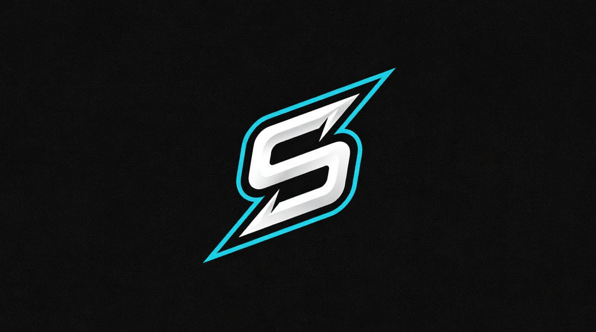

Je suis Sam, ingénieur en cybersécurité et réseaux
J'aide les entreprises à concevoir, sécuriser et améliorer leur infrastructure numérique grâce à des solutions concrètes et à des technologies innovantes.
À propos de moi
Je suis ingénieur en cybersécurité et réseaux, passionné par la conception de systèmes sécurisés et fiables. Mes centres d'intérêt couvrent la cybersécurité, les réseaux, l'intelligence artificielle et le développement logiciel.
J'aime comprendre le fonctionnement des systèmes, identifier leurs faiblesses et développer des outils sur mesure pour résoudre des problèmes techniques et automatiser des tâches liées à la sécurité. Je cherche constamment à apprendre, à expérimenter de nouvelles technologies et à transformer des idées en solutions concrètes.
Résolution de problèmes
J'aime analyser des problèmes complexes et concevoir des solutions efficaces.
Esprit d'équipe
Bonne capacité à collaborer avec des équipes pluridisciplinaires et internationales.
Sécurité avant tout
Je veille à intégrer la sécurité à chaque étape du développement.
Passionné de technologie
Je m'intéresse aux nouvelles technologies, à l'apprentissage continu et à l'innovation.
Expérience
Les étapes académiques et professionnelles qui ont façonné mon parcours technique.
Expérience professionnelle
Stagiaire DevSecOps
SAB SolutionsStage axé sur la cybersécurité, le développement d'applications mobiles et l'intelligence artificielle.
Stagiaire ingénieur réseaux et cybersécurité
A.TelecomStage consacré à l'infrastructure réseau, à l'administration des systèmes et à la cybersécurité.
Formation
Master 2
HETICSpécialisation en cybersécurité, réseaux et sécurité des systèmes d'information.
Master
Université Sorbonne Paris NordFormation axée sur les réseaux, les systèmes, la cybersécurité et les infrastructures informatiques.
Compétences
Technologies et domaines techniques que je maîtrise ou que je pratique.
Cybersécurité
Réseaux et systèmes
Programmation et scripts
IA appliquée à la cybersécurité
Services
Des solutions techniques axées sur la cybersécurité, le développement et les infrastructures.
Sécurité des réseaux et durcissement des systèmes
Sécurisation et durcissement des réseaux, des serveurs et des environnements cloud grâce à la configuration des pare-feu, aux VPN, aux IDS/IPS, à la segmentation et au renforcement des systèmes, afin d'améliorer la résilience globale de l'infrastructure.
Opérations de sécurité et gestion des risques
Surveillance des événements de sécurité, analyse des journaux et des incidents, évaluation des risques cyber et accompagnement des activités de gouvernance, de gestion des risques, de conformité et de sécurité grâce à des rapports clairs et à des recommandations concrètes.
Mes projets
Découvrez une sélection de mes projets académiques et professionnels.
- Tous les projets
- Cybersécurité
- Réseaux
- Sites web
- Applications
- IoT
- Intelligence artificielle
- Vision par ordinateur

Me contacter
Vous avez un projet ou une opportunité en tête ? Parlons-en.